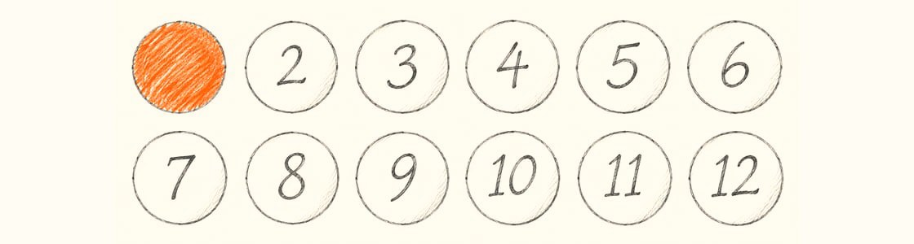

우리함께 Weekly
VOL.○○
2027년 1월 13일 수요일
오늘의 위클리 요약
2월 <삼양 사람들>은 삼양바이오팜으로 가요. 여러분이 그곳에 묻고 싶다고 한 질문을 들고 갈게요. 새 자리에서 출발한 세 사람의 첫 주 메모도 펼쳐요.
이번 주 삼양, 3줄
✓ 2월 행선지는 삼양바이오팜이에요
무슨 일 지난주 <삼양인 한 표>에서 가장 많은 표를 받았어요.
나에게 달라지는 것 듣고 싶은 바이오팜 동료가 있다면 1월 22일까지 추천해 주세요.
더 알아보기 바이오팜 동료 추천하기✓ 출장비 신청, 1월 18일부터 종이 없이 해요
무슨 일 출장비 정산이 새 경비 시스템으로 옮겨 가요.
나에게 달라지는 것 영수증은 휴대폰으로 찍어 올리면 끝이에요.
더 알아보기 시스템 사용 안내
삼양인 한 표 · 지난주 결과
2월은 바이오팜, 그리고 여러분이 그곳에 묻고 싶은 것

612명이 답했어요. 1위 삼양바이오팜 17% · 2위 판교 연구소 14% · 3위 울산 공장 12%
“주사기에 미리 담긴 약은 공장에서 한 개씩 다 검사하나요?”
— 한서진 기사, 삼양사 울산공장
“같은 그룹인데 의약 쪽은 무슨 일을 하는지 잘 몰라요. 하루 일과부터 알려 주세요.”
— 오세린 매니저, 삼양홀딩스 재무팀
“바이오팜도 화학 공장처럼 교대 근무가 있나요?”
— 정우람 대리, 삼양패키징 광혜원공장
생생 리포트
새 명함을 받은 첫 주,
세 사람의 메모장
처음 회사에 온 사람, 11년 만에 처음 팀을 옮긴 사람, 같은 공장에서 처음 다른 라인을 맡은 사람. 세 사람에게 첫 주 휴대폰 메모장에 남긴 한 줄을 요일별로 보여 달라고 했어요.
이하은 사원
삼양사 식품BU · 신입
월 내 이름표. 떨린다
화 용어 모름. SAMI한테 물어봄
수 “천천히 해” 다섯 번
목 동기들도 모름. 안심
금 연구소 견학!
최민석 과장
홀딩스 재무팀 → 사업기획팀
월 11년 만에 짐. 박스 셋
화 질문은 하나만
수 다 아는 척 금지
목 “돈은 언제 들어와요?”
금 그 질문 먼저 해 달래
강태호 기사
삼양사 울산공장 B라인
월 라인 냄새가 다르다
화 물음표 23개
수 겨울엔 이 소리 정상
목 야간 끝. 물음표 11
금 물음표 4. 겨울 나 보자
강태호 기사는 인수인계 노트의 이해 안 되는 줄마다 물음표를 붙여 선배에게 물었어요. 첫 주가 끝날 때 물음표는 스물세 개에서 네 개로 줄었어요.
세 사람이 같은 말을 했어요
“천천히 해”, “다음엔 하나만 해”, “겨울엔 이 소리가 정상이야”. 올해 우리 팀에 새로 온 동료가 있다면, 이번 주에 한마디 먼저 건네 보면 어떨까요?
삼양인 한 표 · 이번 주 질문
3월 리더 인터뷰에서 꼭 묻고 싶은 질문은?
이름 없이 보내도 돼요. 이름을 남기면 질문이 실릴 때 “누가 물었는지”도 함께 실려요.
질문 보내기
서명란: 이름 · 소속 (선택)
마감 1월 15일(금) 오후 6시 · 기프티콘 5명 추첨
지난 호 피드백
“‘칩 그리는 물감 원료’ 표현 좋네요.”
— 서지우 사원, 삼양케이씨아이
“저희는 열한 번이었어요.”
— 문경환 차장, 삼양이노켐
출석부 · 이번 호에 이름이 실린 동료 11명 · 올해 누적 11명
이하은 사원 · 삼양사 식품BU
최민석 과장 · 삼양홀딩스 사업기획팀
강태호 기사 · 삼양사 울산공장
한서진 기사 · 삼양사 울산공장
오세린 매니저 · 삼양홀딩스 재무팀
정우람 대리 · 삼양패키징 광혜원공장
김나래 사원 · 삼양사 식품BU
서지우 사원 · 삼양케이씨아이
문경환 차장 · 삼양이노켐
윤지현 책임 · 삼양엔씨켐 품질팀
박도현 선임 · 삼양엔씨켐 생산팀
삼양 우리함께 Weekly · 발행 삼양홀딩스 커뮤니케이션팀 · 회신 weekly@samyang.com (예시 주소)
지난 호 다시 보기 · 수신 거부